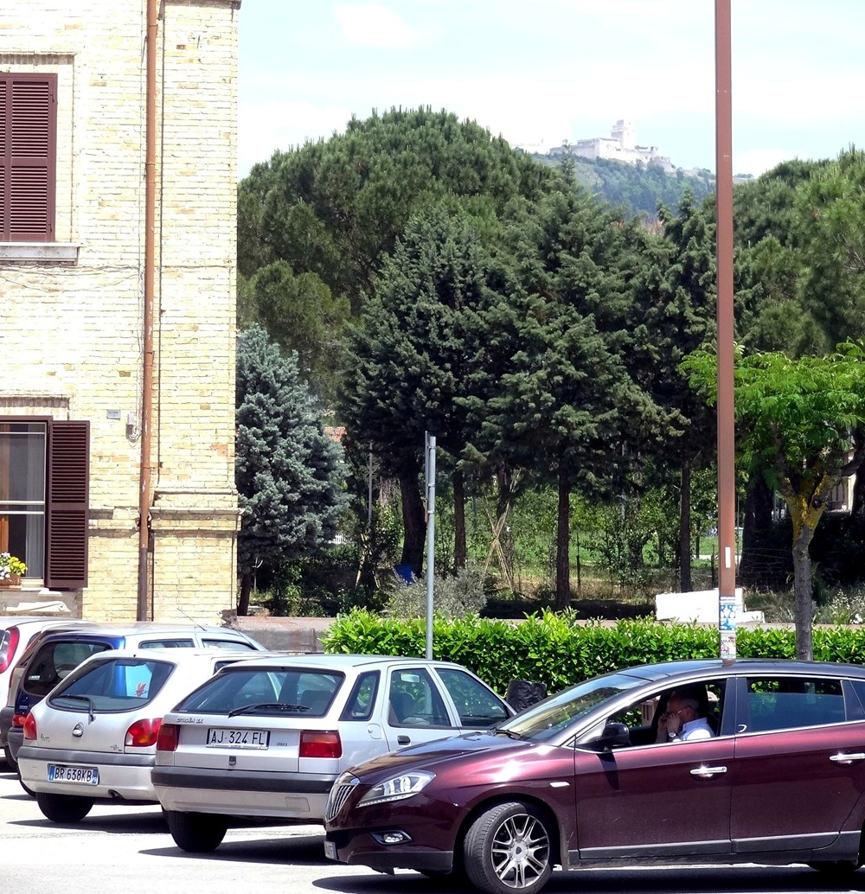
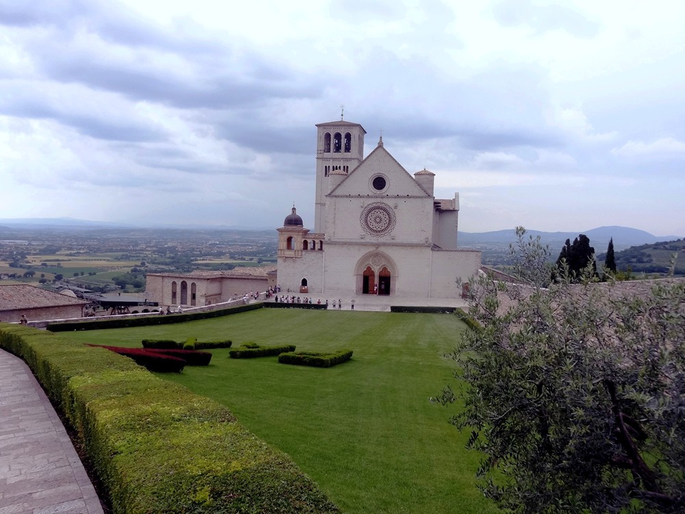
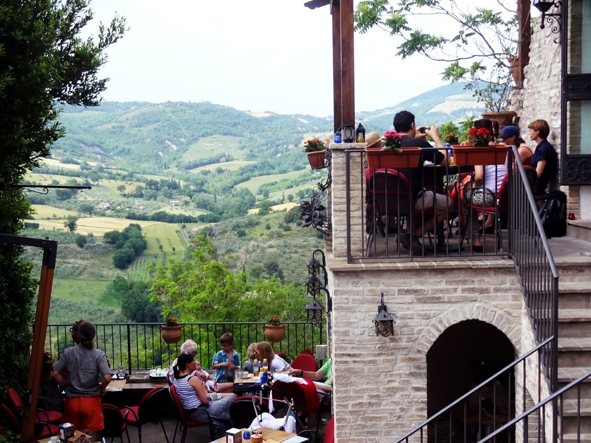
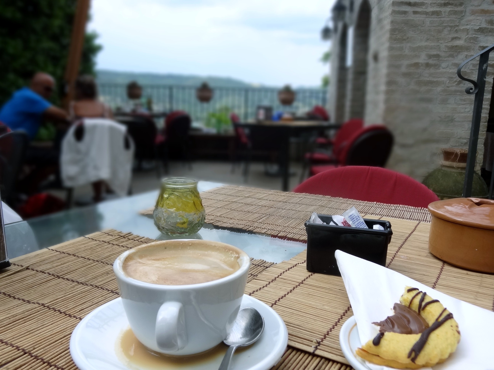
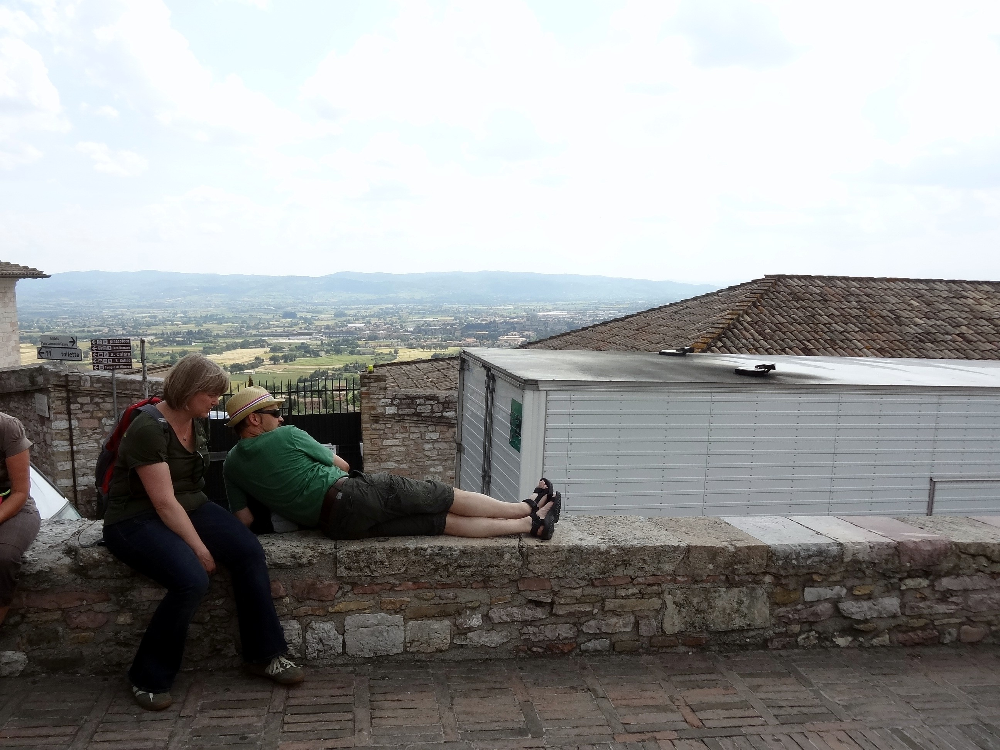
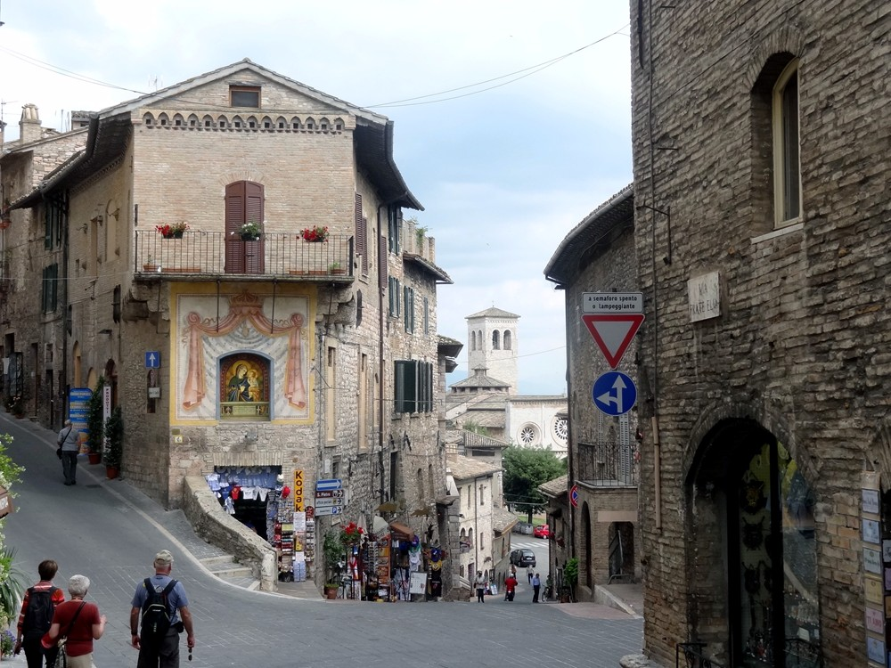
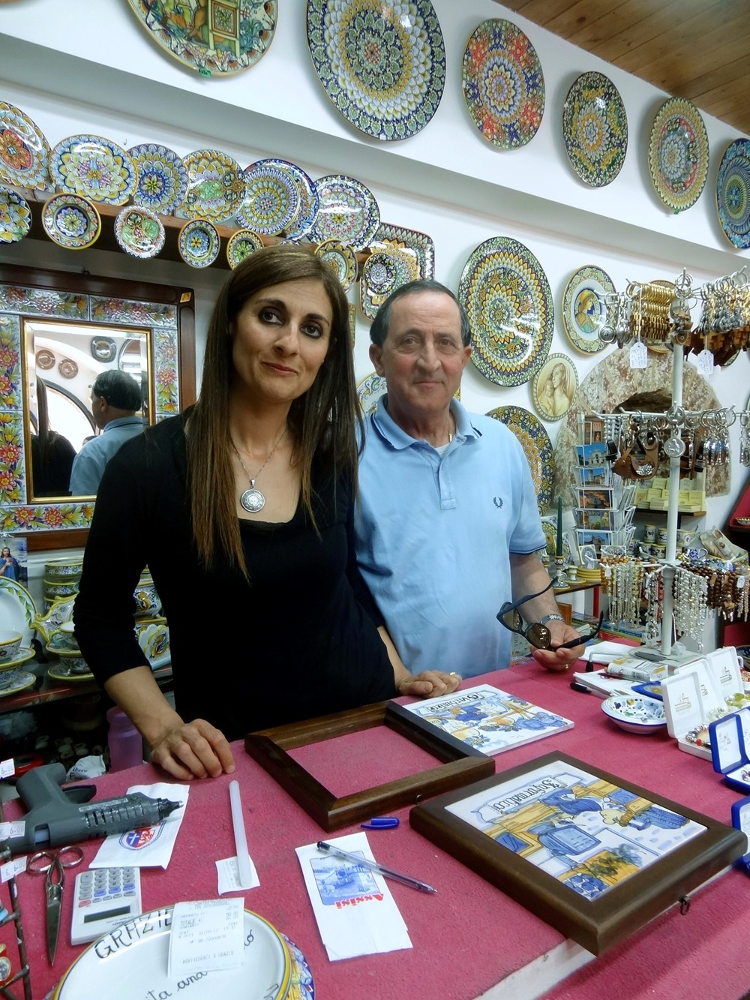

|
 |
||
|
City on a hill. Roma to Assisi via
train involves a three-minute connection in Foligno. Despite the
reputation of Italian trains, it worked perfectly--jump off one
train, walk across the platform, jump on the other. It doesn't take
Mussolini to make it work. At the Termini at Roma, I was fussing
because the ticket showed the travel distance, but neither the
departure time, platform or train number. The zero-English conductor
finally got it across to me that on local trains, the tickets are
good for 24 hours and you commit to a departure time by putting them
in a clock stamp just before boarding. This is Assisi from the
train station. There is a half-hourly bus up the hill. You buy
tickets at the scuzzy train station bar. Of which St. Francis
(1182-1286) would not approve.
Arriving on the bus
|
|
 |
| The Basilica of St. Francis was built in stages between the 1200s and 1700s. This is the upper basilica. The lower basilica is underneath it, but also at ground level due to the hillside. It opens onto the plaza at the lower left. St. Francis's tomb is on an elevated platform in the lower basilica. |
|
 |
| Coffee break! |
|
 |
| Don't think St. Francis would approve of this, either. To find the source of the love that attracted the birds and wrote the poems, he turned his back on any enjoyment of the five senses, which normally so consume our attention that we don't notice that anything else exists. Which looks like lunacy in a time when we don't think there is anything else, and is still a scary concept for those of us who think that there is and are looking at it. We're usually consumed by the emotional flux that accompanies the sensory phenomena that we put no space between it and our identity, until life makes it to hot to handle. And yet--how did the Absolute come up with all these specificities? Blake observed, "Eternity is in love with the productions of time." |
|
 |
Umbrian countryside. Was thinking about the mass--Nicene creed specifically and how it would make me unwelcome at communion. People have taken this one phrase "that whosoever believeth in him" and built a theological funhouse where God cares vitally about---your opinions. Gimme a break. I'd rewrite the mass to say something true and challenging, like "As God loves me no matter what I do, I will love God no matter what happens in my life." (I don't think I'll be Pope anytime soon...but life has already tossed some pretty big surprises in my path.)
|
 |
| The earthquake of 1997
and its aftershock collapsed the basilica vault, destroying Giotti
frescoes of the life of St. Francis, and killing two monks and two
specialists who were inspecting the damage. The town didn't fare much
better. The townspeople said that St. Francis was pissed due to the
commercialization; but it's minimal compared to Toledo, which is
essentially a theme park about itself. |
|
 |
| This lady makes tiles with medieval illustrations of modern professions. Bought a couple. I spoke Spanish as much as possible, but contrary to popular legend, it's not all that close. How close are buenos dias and buon giorno? 50%? How about closed (cerrado vs. chiuso), exit (salida vs. uscita), milkshake (batido vs. frappe)? Sure there are cognates, but there are to English too; would I be fast enough on my feet to recognize journal in giorno on the fly? Most people in tourism have a 150 word English tourist vocabulary, and it you're not speaking Italian, they would much rather use that. This lady actually continued the conversation in Spanish--turns out her husband is from Spain. |